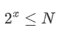
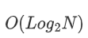
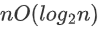

练习
1.以下算法时间复杂度为：
void fun(const int n) {
int i = 1;
while (i <= n) {
i = i*2;
}
}
这里主要是算出“i = i*2;”语句的执行次数和n规模之间的关系。
通过计算等比数列求和公式知：

其中x是运行次数。x即为所求的算法复杂度。所以算法复杂度为：

2.求以下算法时间复杂度：
x = 2;
while(x < n/2)
{
x=2*x;
}
循环语句x=2*x;执行次数i和n规模的关系为:

所以算法复杂度为：
3.求整数n的阶乘的算法如下，计算时间复杂度：
int fact(int n)
{
if(n <= 1){
return 1;
}
return n*fact(n-1);
}
这是个递归方法计算n的阶乘。显然一共调用fact函数n次，故其算法时间复杂度为O(n);
4.下列程序段的时间复杂度是？
count = 0;
for(k = 1; k <= n;k *= 2)
for(j = 1; j <= n; j++)
count++;
第一层for循环执行了次，第二层for循环每次执行n次，故算法时间复杂度为：